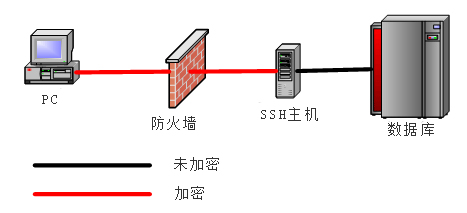
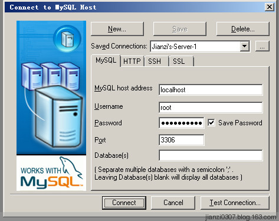
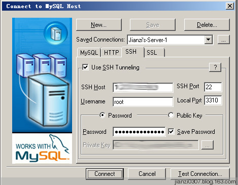

通过SSH隧道绕过防火墙访问MYSQL
/ / 点击 /今天突然想从本地访问远程服务器的MSYQL，但是数据库一般设置不会对公网开放3306端口的，一般都被防火墙挡了！那么我是不是就不能访问了呢？？？
不是，如果已经有了ssh权限，我们可以通过ssh隧道绕过防火墙访问服务器的任何端口，SSH隧道即SSH端口转发。拓扑图如下：

方法：拿SQLyog访问MYSQL为例
MYSQL host address填写localhost即可，这里填写数据库连接参数

SSH选项卡填写SSH登陆参数

工作中提供一些服务器给一个合作伙伴，他们有ssh权限，但是每次都要求需要远程访问数据库，要求防火墙打开3306，今天我突然才想到，为什么他们不通过SSH端口转发来连接呢？？？
注：一点小小说明，MYSQL host address填写问题可能会困扰大家，这个是相对于SSH主机的
如果数据库在SSH主机上，则填写localhost，如果数据库在和SSH主机同一内网，例如数据库内网IP为192.168.1.8
则这里填写数据库内网IP192.168.1.8。
全文完。